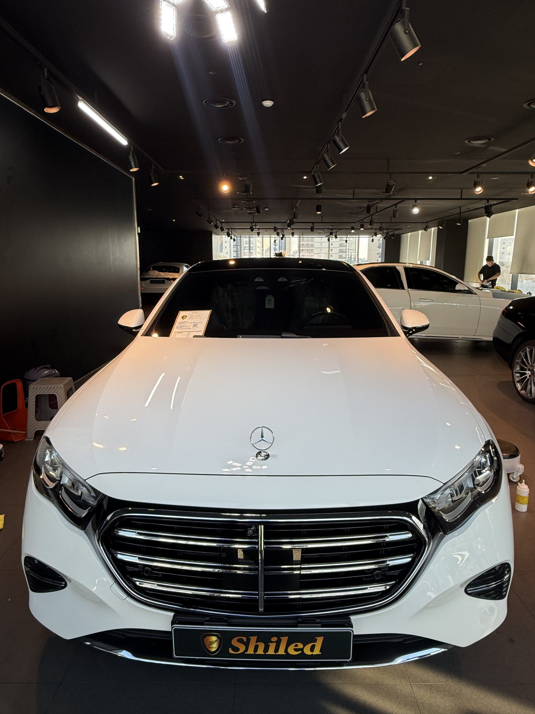
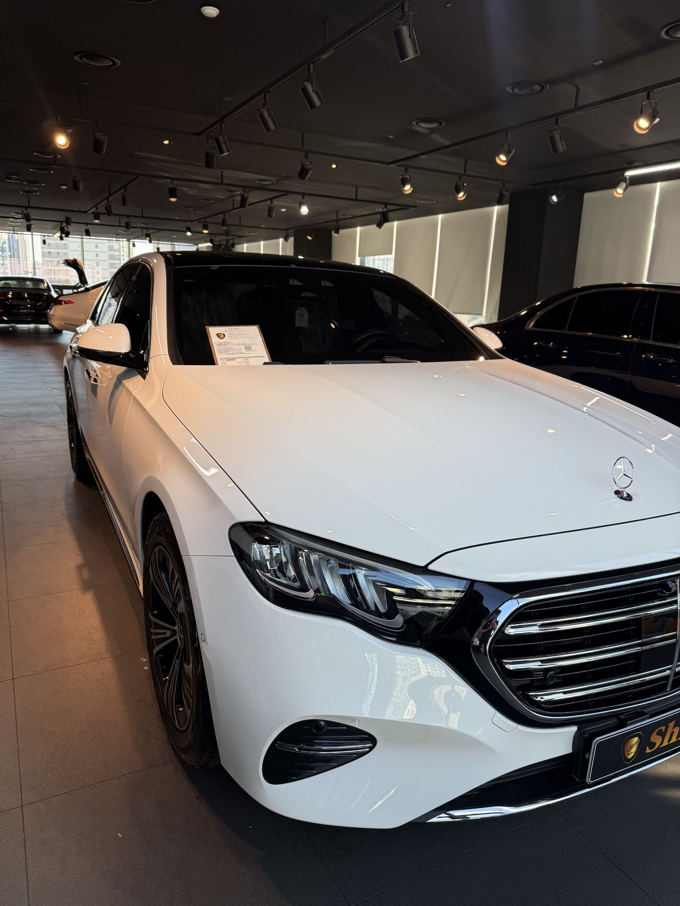
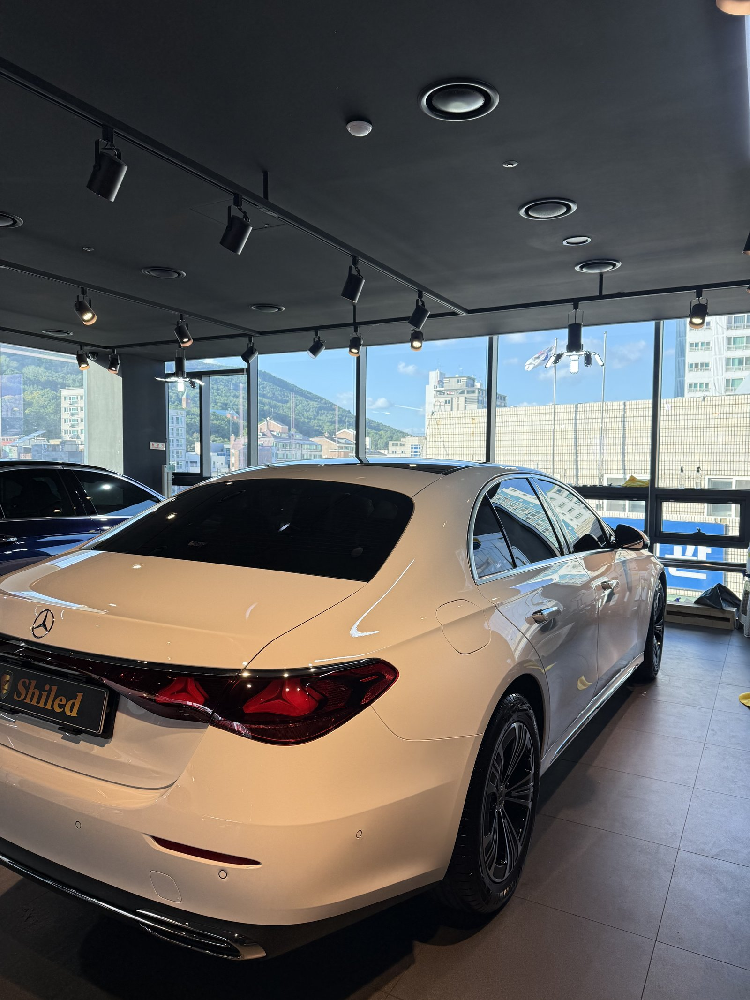
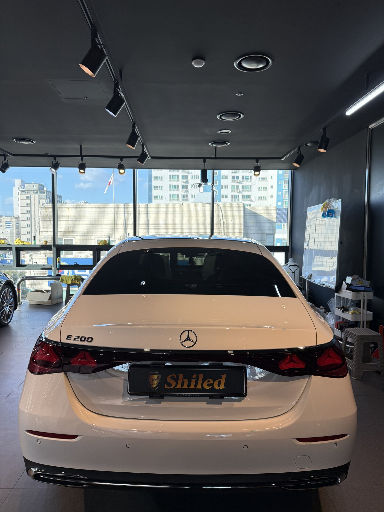
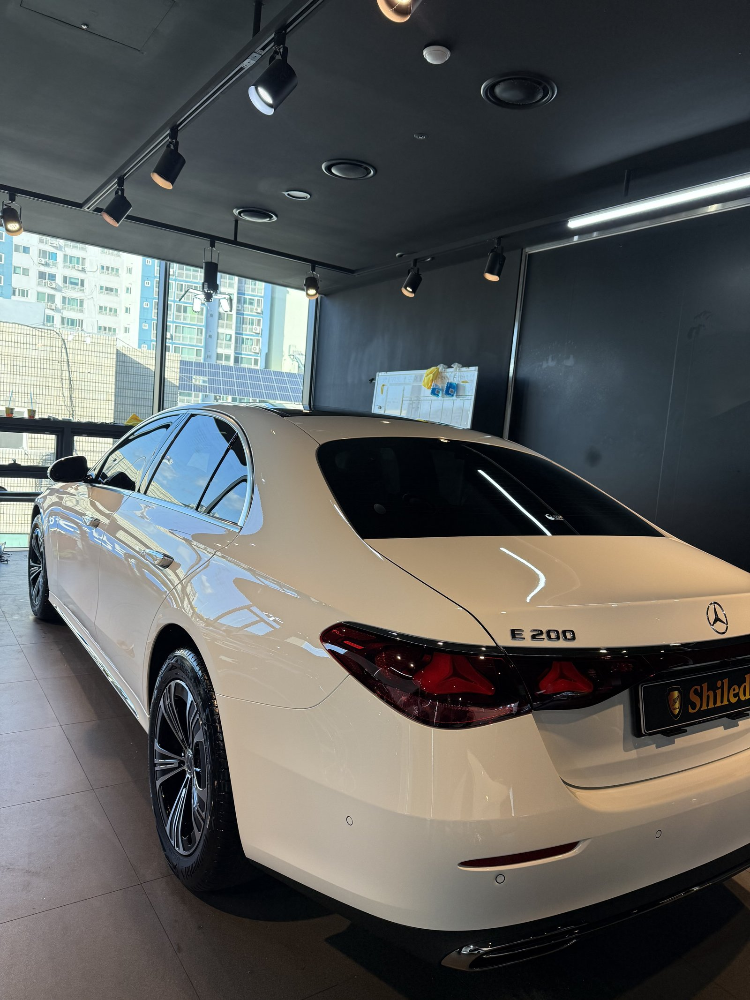
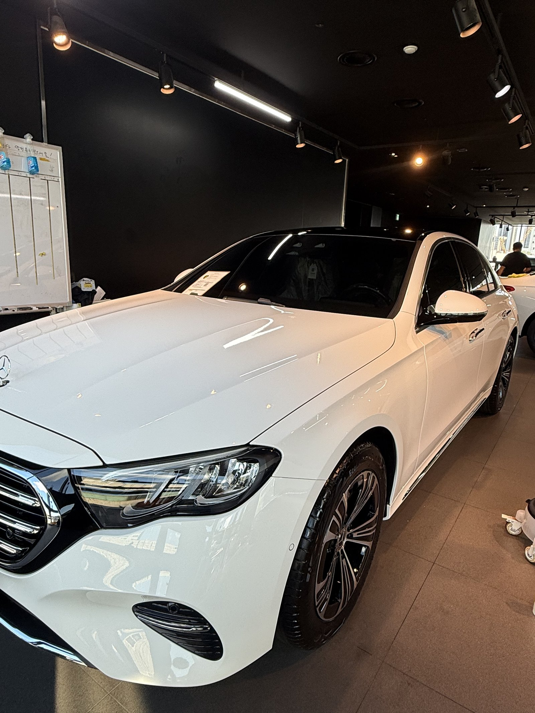
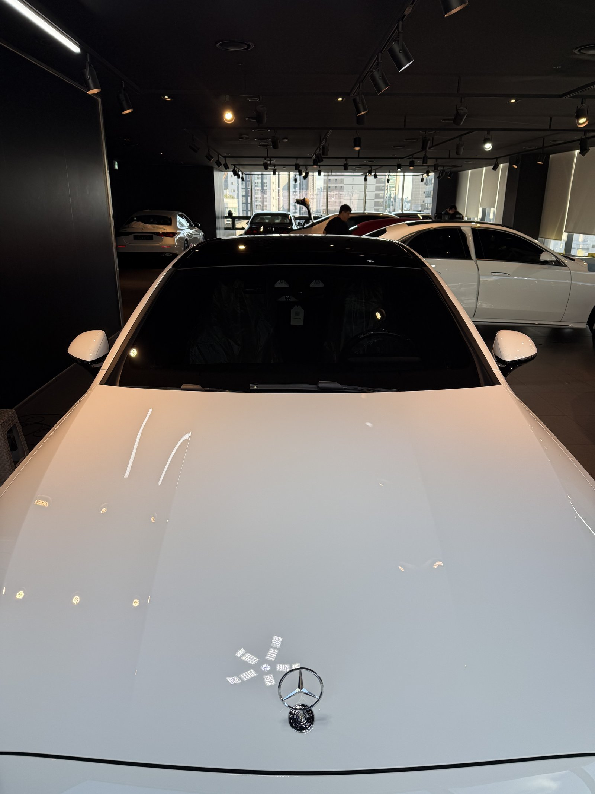
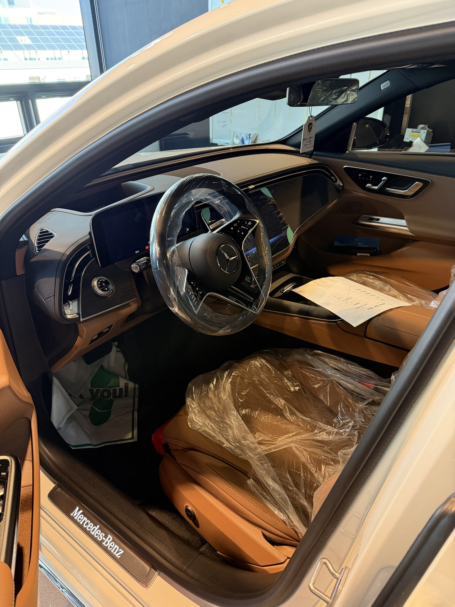
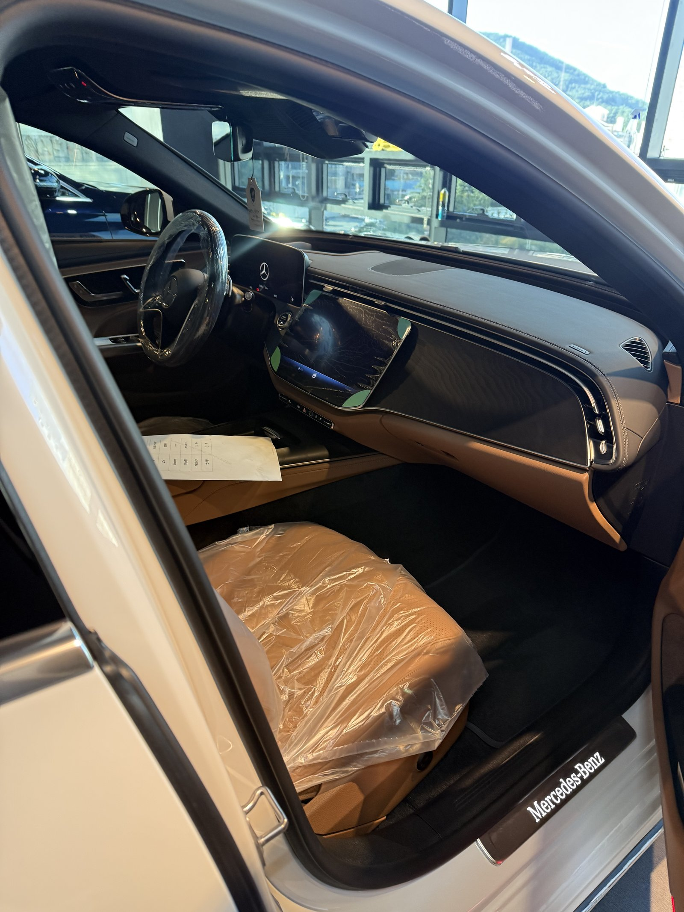
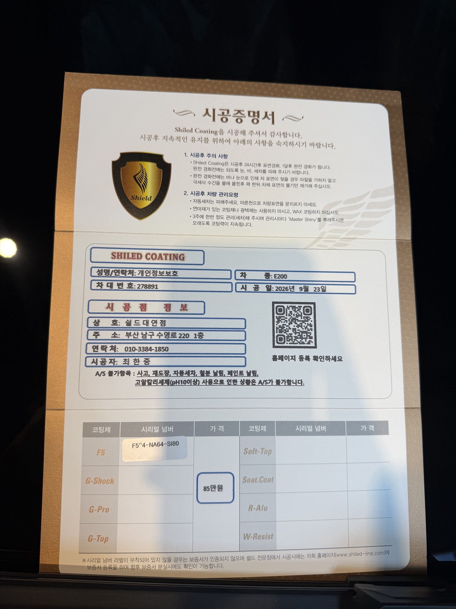

벤츠 E200 백색입니다.
실내 시트 비닐도 그대로인, 출고 전 새 차입니다.
이번 글은 부산 유리막코팅을 언제 하느냐에 대한 이야기입니다.

출고 전과 출고 후, 무엇이 다른가요?
출고 후에 코팅하시는 분도 많습니다.
다만 며칠만 타도 세차와 주행으로 미세한 스크래치와 오염이 생깁니다.
그 상태에서 코팅하면 그 흔적까지 같이 덮게 됩니다.
출고 전에 하면 공장에서 나온 도장 그대로 위에 코팅막이 올라갑니다.


E200 백색에 F5를 고른 이유
F5는 색감의 깊이와 글로시함에 특화된 코팅입니다.
흰색 E클래스는 크롬 그릴과 차체 색이 대비되는 차입니다.
차체 쪽 광이 살아나야 그릴과의 대비도 깔끔해집니다.
그래서 이 차는 F5 싱글코팅으로 진행했습니다.

기술자의 팁
출고 전 코팅은 인도 일정과 맞물립니다. 코팅이 자리 잡는 시간까지 계산해 일정을 잡아야 하므로, 계약 단계에서 미리 출고일을 알려주시면 가장 여유 있게 진행할 수 있습니다.



실내는 출고 전 그대로 지킵니다
출고 전 차량은 안팎 컨디션을 함께 챙깁니다.
실내는 시트 보호 비닐이 씌워진 신차 상태 그대로입니다. 외부는 F5로 광을 잡고, 인도까지 깨끗한 상태로 관리합니다.


시공증명서를 함께 드립니다
모든 시공 차량에 시공증명서를 드립니다.
차종·시공일·코팅제 시리얼 번호가 적혀 있고, 홈페이지에 등록해 보증을 받으실 수 있습니다. 이 차는 F5 코팅으로 기록돼 있습니다.

차종·시공일·코팅제 시리얼이 기재된 시공증명서
자주 묻는 질문
Q. 신차 유리막코팅, 출고 전과 출고 후 중 언제가 좋나요?
A. 출고 전이 유리합니다. 운행과 세차로 미세 스크래치가 생기기 전, 공장 도장 그대로의 상태에 코팅막을 올릴 수 있기 때문입니다.
Q. 이미 출고한 차는 코팅이 늦은 건가요?
A. 늦은 건 아닙니다. 다만 그사이 생긴 오염이나 잔기스가 있다면 먼저 정리하고 코팅하는 것이 좋습니다. 차 상태를 보고 판단합니다.
Q. E200 백색에는 어떤 코팅이 맞나요?
A. 이 차는 F5로 진행했습니다. F5는 색감 깊이와 글로시함에 특화돼 흰색 차체의 광을 살려줍니다.
Q. 신차코팅도 전처리를 하나요?
A. 합니다. 운송·보관 중 묻은 미세 오염을 디테일링 세차와 탈지로 걷어낸 뒤 코팅을 올려야 제대로 밀착합니다.
Q. 쉴드광택 위치와 예약은 어떻게 하나요?
A. 부산 남구 유엔로220 1F 쉴드광택입니다. 예약·상담은 010-3384-1850, 대표 최한중이 직접 상담하고 책임 시공합니다.
새 차일수록 시작점이 다릅니다. 가장 깨끗할 때 입혀두십시오.
제품을 직접 만드는 사람이 직접 시공합니다.
부산에서 신차 유리막코팅을 고민 중이시면 편하게 연락 주십시오.
어떤 차를 타냐보다 어떻게 타냐가 중요합니다~!
시공 중에는 전화를 받지 못할 때가 많습니다.
카카오톡으로 차종과 원하시는 시공을 남겨주시면 확인 후 답변드립니다.
쉴드광택 · 부산 남구 유엔로220 1F · 대표 최한중